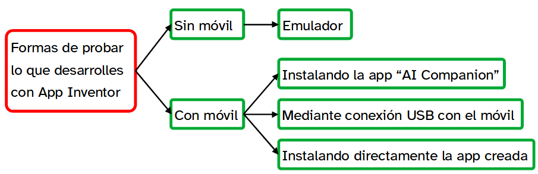

¿Estudias o programas? Controlando nuestro proyecto TyD 2º ESO
¿Puedo probar?
¿Qué pasa cuando completamos una secuencia de programación?
Hay básicamente dos posibilidades. Funciona o no.
Por tanto, la siguiente pregunta parece obvia ¿Cómo puedo saber si funciona?
La respuesta también es obvia. Probándola.
Ahora es cuando se plantea la pregunta crucial ¿Cómo se puede hacer la prueba?
Sígueme y encontraras la respuesta.
1. ¿Cómo hacer pruebas?
Opciones
En el siguiente esquema puedes ver que en App Inventor hay varios métodos para probar una app, o solo una parte de ella. De todos ellos vas a tener información para aprender cómo puedes utilizarlos.

Vídeo
Aquí tienes un vídeo que te muestra de forma rápida cómo acceder a las opciones de App Inventor para hacer pruebas con el trabajo que desarrolles.
AI Companion
Aquí tienes un vídeo que te muestra cómo utilizar la opción de AI Companion en App Inventor para hacer pruebas con el trabajo que desarrolles.
Necesitarás tu dispositivo móvil donde habrás instalado la app del mismo nombre para conectarla en la misma red con App Inventor.
Emulador
Aquí tienes el enlace a un tutorial que te muestra cómo utilizar la opción del emulador en App Inventor para hacer pruebas con el trabajo que desarrolles.
Como su nombre indica, el propio ordenador simula un dispositivo móvil conectado con App Inventor para reproducir el trabajo realizado.
Un método infalible es instalar la app en tu dispositivo móvil y ver que tal se comporta.
Sin embargo, es poco operativo, ya que no se actualiza en tiempo real, sino que con cada modificación hay que desinstalarla y volver a realizar el proceso.
Por tanto, solo se empleará en caso de que la app esté acabada y se quiera probar en condiciones de uso.
En cualquier caso aquí tienes un vídeo que te mostrará todo lo que tienes que hacer.
2. Simulando, que no disimulando
Prueba cómo funcionan los eventos que has programado anteriormente utilizando el emulador de App Inventor y escribe tus conclusiones.
Si detectas algún error, revisa el código y corrígelo.
3. Pásate a AI Companion
Descarga, instala y configura en tu móvil AI Companion para que se puedan probar los programas que hagas con App Inventor.
Crea un documento con capturas de pantalla del proceso y explícalo.
Lumen dice ¿Recuerdas cómo se hace?
Ya has visto cómo hacerlo, pero puede que no lo recuerdes bien, así que aquí te dejo este vídeo de guía:
4. ¿Eres de emulador o de AI Companion?
Prueba cómo funcionan los eventos que has programado anteriormente utilizando la extensión AI Companion y escribe en tu cuaderno tus conclusiones.
Recuerda que lo puedes hacer de forma inalámbrica si estás en la misma red o mediante USB en caso contrario.
Si encuentras algo que no funcionara, trata de corregirlo y vuelve a probar.
5. Instala tu propia app
Instala en tu móvil la app que has creado con los eventos que has programado anteriormente y prueba que todo funciona correctamente.
Escribe en tu cuaderno tus conclusiones acerca del proceso y su resultado.